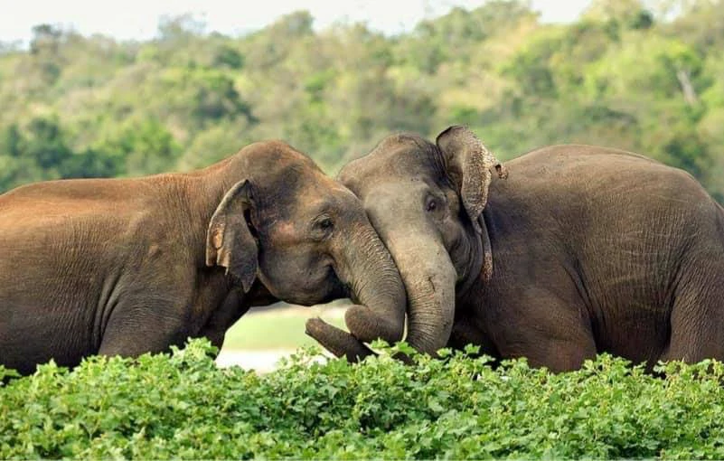
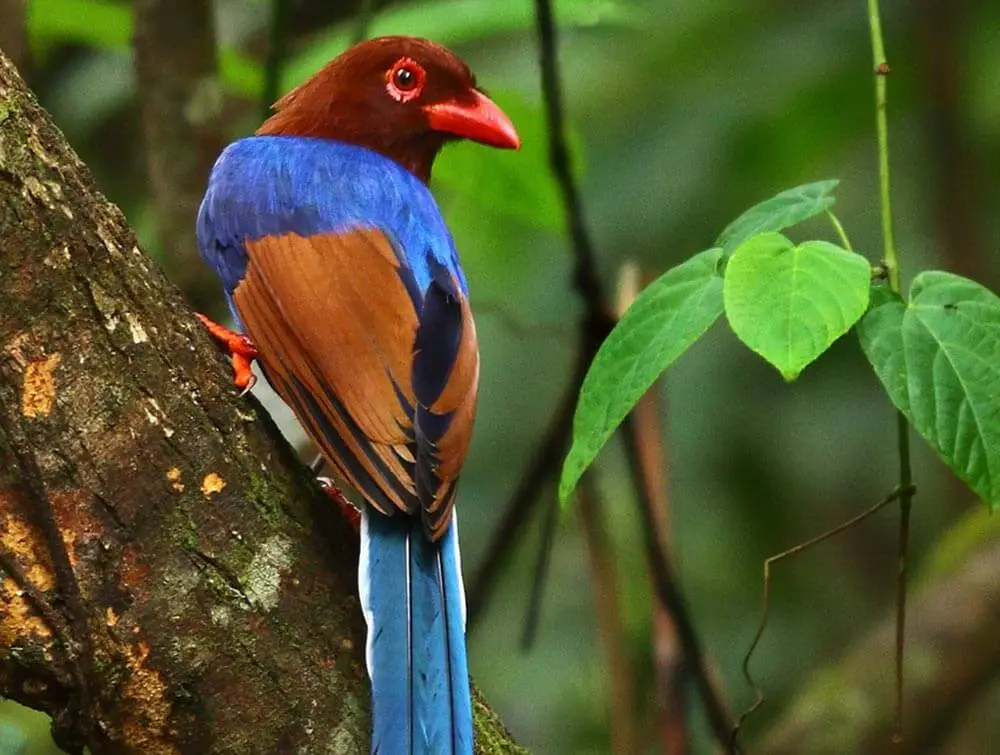

Our Wildlife Locations
Embark on a thrilling adventure as we invite you to explore the diverse and mesmerizing wildlife locations that define the essence of Sri Lanka's natural beauty. From the mist-covered peaks of Horton Plains to the sun-kissed shores of the island, each destination holds a unique chapter in the story of Sri Lanka's biodiversity.
Ceylon
HORTON PLAINS NATIONAL PARK
Horton Plains National Park is a breathtakingly beautiful and ecologically significant area situated in the central highlands of Sri Lanka. Established as a national park in 1988, it encompasses an expanse of 3,169 hectares and is characterized by its unique and diverse ecosystems. The park is part of the Central Highlands UNESCO World Heritage Site.Horton Plains National Park is a key component of Sri Lanka’s most important catchment area. It is a highly unique eco system that homes a large number of endemic plants and fauna that represent the country’s wet and montane zones. Mount Totupolaanda and Mount Kirigalpotta can be seen in the north and west regions of the park while the big world’s end is one of the park’s main attractions. The Baker’s fall with its misty waters is another awe inspiring location within the park. The plateau at 2,100 m of Horton Plains makes for the highest tableland in the country. The climate within the park is mostly rainy with an annual rainfall that exceeds 5000 mm even though a short dry spell is sometimes experienced between January and March. The average temperature in the park is usually around 15ºC A grassland fringed with patches of dense montane cloud forests is a characteristic feature of Horton Plains that supports high levels of endemism with 5% of the floral species f being endemics of Sri Lanka. The Sambar Deer is the most commonly seen faunal species in the park even though Slender Loris, Long Clawed Shrew, Montane Toque Macaque are among other common species. The park s also home to 12 species of endemic birds with certain species such as the Sri Lankan Blue Magpie only recorded in Horton Plains.

SINHARAJA FOREST RESERVE
Sinharaja Rainforest, a UNESCO World Heritage Site, is a pristine tropical rainforest located in the southwestern part of Sri Lanka. Covering an area of approximately 11,187 hectares, Sinharaja is a biodiversity hotspot and one of the last remaining expanses of undisturbed rainforest in the country. It is one of the few virgin forests left in the world. This evergreen rain forest, a UNESCO World heritage site, is one of the few virgin rain forests left to date. Damp mysterious and teeming with life, the Sinharaja forest reserve situated 120 KM South East of Colombo, is the last expensive stretch of virgin rainforest on the island. At just over 11000 hectares, line across the wet zone the Southern edge of the hill country, Sinharaja is an ecological treasure trove. It is staggering array of flora and fauna place it among the top bio diversity hotspot in the world. Sinharaja Forest Reserve encompasses the largest single swath of remaining low land tropical rain forest in the country. Over 130 birds, species are found here including many of the 33 species endemic to the Sri Lanka.
UDAWALAWE NATIONAL PARK
Udawalawe National Park, located in the southern part of Sri Lanka, stands as a testament to the island's rich biodiversity and commitment to wildlife conservation. Nestled in the Uva Province, approximately 165 kilometers southeast of the capital city, Colombo, this national park is renowned for its stunning landscapes and diverse array of wildlife. The park, established in 1972, covers an expansive area of grasslands, scrublands, and open forests, creating a varied and thriving ecosystem. Its centerpiece, the Udawalawe Reservoir, not only enhances the scenic beauty of the park but also serves as a crucial water source that attracts a multitude of wildlife, especially during the dry season. Udawalawe National Park has earned widespread acclaim for its population of wild Asian elephants, making it one of the premier destinations in Sri Lanka to observe these majestic creatures in their natural habitat. The park's open terrain facilitates excellent opportunities for wildlife enthusiasts to witness elephants, along with other inhabitants like water buffaloes, spotted deer, wild boars, crocodiles, and numerous bird species.
| Location | map | Animal found | Intresing fact |
|---|---|---|---|
| Udawalawe National Park |  | Sri Lankan elephants hold significant cultural importance in the country. They are considered a symbol of national heritage and are featured prominently in religious and cultural events. Elephants often play a role in traditional ceremonies, processions, and festivals, carrying sacred relics and symbols. | |
| Horton Plains National Park |  |
The Sambar deer in Horton Plains has adapted to the relatively high altitude environment. Horton Plains National Park, situated at an elevation of around 2,100 meters (6,900 feet) above sea level, experiences cooler temperatures than many other parts of Sri Lanka. The Sambar deer in this region has evolved to thrive in these cooler conditions, showcasing how wildlife can adapt to specific environmental niches. | |
| Sinharaja Forest Reserve |  | The Sri Lankan Blue Magpie (Urocissa ornata) is not only a visually striking bird with its vibrant blue and white plumage but also possesses interesting behavioral traits. One notable fun fact about the Sri Lankan Blue Magpie is its highly social nature and its tendency to live in large family groups. |